TECHVESTVENTURES DAILY RISK ALERTS — Emergent News Digest — Nov 13, 2026, 9:00 AM EST ALL RISK REPORTS click TVV Risk Center
TVV RESEARCH DIGEST — November 13, 2026 — 12 desks
1. Major Geopolitical Conflict Developments
- ★ Kremlin readout: Putin aide Yuri Ushakov called Thursday's meeting with Steve Witkoff and Jared Kushner "substantive, constructive, frank and productive." Both sides agreed to continue the talks track and are finalizing a prisoner exchange that would likely be the largest to date; no dates or numbers were given. Conflicting accounts: Kushner says both sides agreed to bring European partners into the next round, while Ushakov gave no direct answer and said Europeans "must decide whether they want peace or continued war." Zelenskyy met the envoys near Dublin that evening and reported agreement on the swap and on Europe joining the next round. Kremlin · Interfax · Baltic Monitor digest
- ★ Yemen's Houthis say they struck a pumping station on Saudi Arabia's East-West oil pipeline, an oil facility at Yanbu and an Aramco building in Riyadh; the Saudi-led coalition says it intercepted two drones over the Riyadh region and Eastern Province and has not confirmed damage. Riyadh has rerouted about 4 million barrels a day, about 4% of world supply, through that pipeline to avoid Hormuz. The UN Security Council unanimously extended Yemen sanctions for a year and condemned the Houthi attacks on Saudi Arabia. Al Jazeera · Dawn
- ★ Hormuz (conflicting claims, screen skeptically): Iran's army says two more tankers hit mines and caught fire Thursday afternoon in the eastern strait after ignoring warnings, on top of the two supertankers the IRGC Navy reported on Wednesday; Reuters could not verify either account. UKMTO separately reported one vessel hit by an unidentified projectile about 14 nautical miles northwest of Ras Al-Khaimah while leaving the strait, with an engine-room fire and all crew evacuated. President Trump posted that the US does not need a deal with Iran: "we've got their Strait." Investing.com / Reuters · Anadolu · CNBC
- ★ Odds before next week's US–China summit: Polymarket prices a Chinese invasion of Taiwan by end-2026 at 1.5% (2.1% a month ago), a blockade at 1.9% and a US–China military clash at 2.1% (see graph). Near-term implication: bettors expect calm going into the meeting. Polymarket
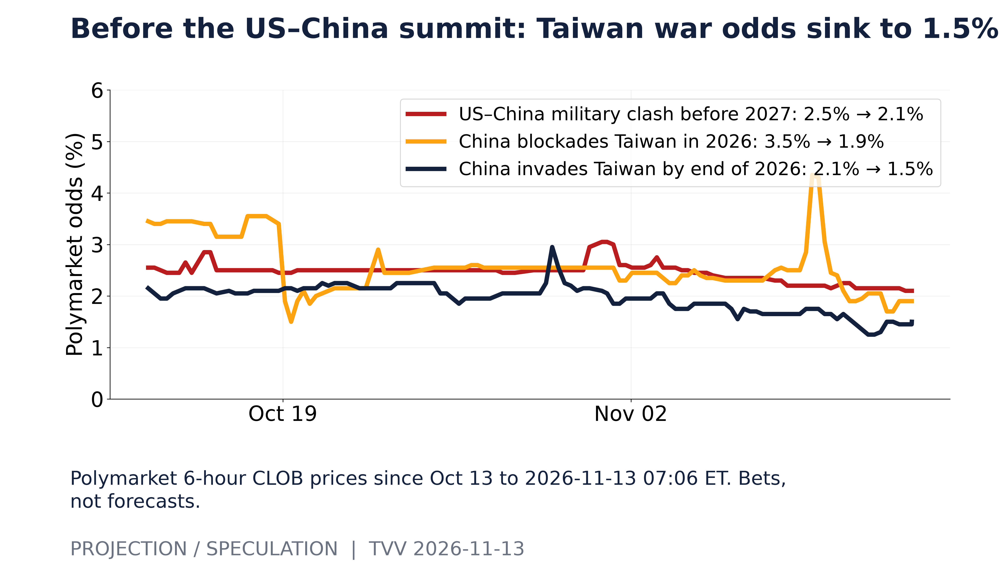
Before the US–China summit: Taiwan war odds sink to 1.5%. Polymarket 6-hour CLOB prices since Oct 13 to 2026-11-13 07:06 ET. Bets, not forecasts. [Projection/Speculation; data as of 2026-11-13 07:06 ET] Source: polymarket.com data page
2. Major Terror / Security Incidents
- ★ Russia: a bomb under a car killed a Russian colonel on Kolpinskoye Highway in Shushary, St. Petersburg, on Thursday; Russian outlets name him as Dmitry Lobodin, chief navigator of the 6th Air and Air Defense Army. Investigators opened a murder case and no group has claimed it. Fontanka, citing one unnamed source, reports the suspect fled to Istanbul hours before the blast; there is no official confirmation. Euronews · Meduza · Baltic Monitor digest
- ★ Cyber: Poland says a foreign-originated cyberattack on ePUAP, its national e-government platform, was detected and stopped; the system stays offline as a precaution, and officials report no confirmed data theft. Officials indicate the attackers had prepared a broader operation aimed at paralyzing administration in December. Maersk's confirmed data theft, with a $5 million WhiteArmor extortion demand, remains under investigation. CISA's exploited-flaw catalog added 100 entries in 2026Q3, the most of any quarter since 2023; 145 of 913 additions since 2023 (16%) carry the ransomware flag, which CISA often adds later (see graph). PAP · The Record · SecurityWeek · CISA KEV
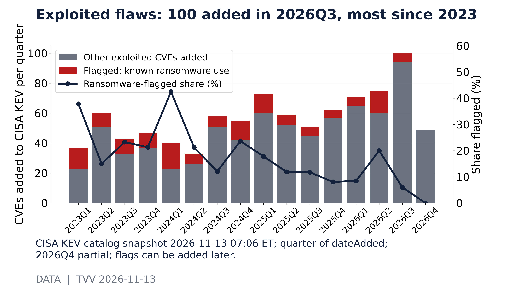
Exploited flaws: 100 added in 2026Q3, most since 2023. CISA KEV catalog snapshot 2026-11-13 07:06 ET; quarter of dateAdded; 2026Q4 partial; flags can be added later. [Data; data as of 2026-11-13 07:06 ET] Source: cisa.gov data page
3. Earthquakes and Eruptions
- ★ No new M6.0+ quake with significant casualties or damage since the last issue. The largest, an M6.0 at shallow depth in the New Ireland region of Papua New Guinea late Thursday, had no reported damage. Context: USGS counts 127 M6+ quakes so far in 2026, a pace of about 146 for the year against a 2000–2025 average near 149 (see graph); implication: 2026 is tracking an ordinary year, and single aftershock sequences can swing the count. INGV · USGS
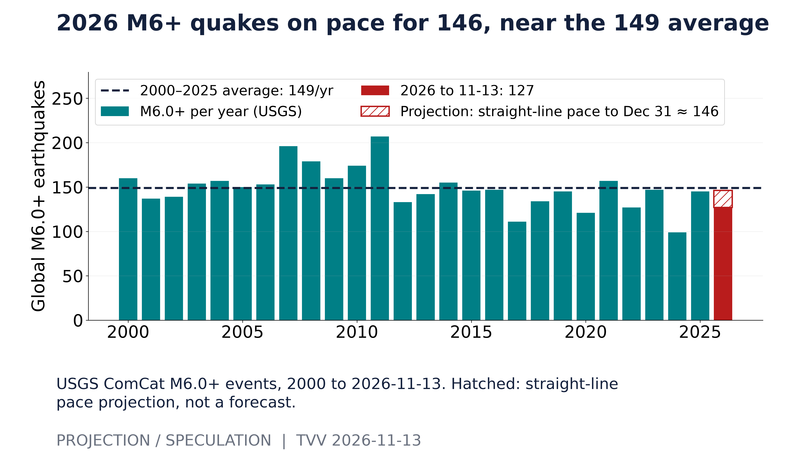
2026 M6+ quakes on pace for 146, near the 149 average. USGS ComCat M6.0+ events, 2000 to 2026-11-13. Hatched: straight-line pace projection, not a forecast. [Projection/Speculation; data as of 2026-11-13] Source: earthquake.usgs.gov data page
4. Solar / Space Weather
- ★ Quiet: the greatest Kp in the past 24 hours was 2, and NOAA expects no storms through Nov 15 (top Kp 1.67, solar radiation storm odds 5%). Daily Ap has stayed at 5 or below for 30 days, while NOAA's 27-day outlook still marks G1 (Kp 5) days on Nov 17–18, Nov 27–28 and Dec 4–5 (see graph); implication: minor-storm risk returns early next week, though such outlooks have low skill. NOAA SWPC 3-day forecast · NOAA SWPC daily indices
- ★ Long-horizon watch: magnetic north keeps drifting toward Siberia in NOAA's measured and modeled data, but no one can predict the timing of a sudden geomagnetic shift. Michael Hentschel's own view: 2035 at the earliest, with critical earth changes along the way. Next weekly globe: Nov 15. NOAA NCEI
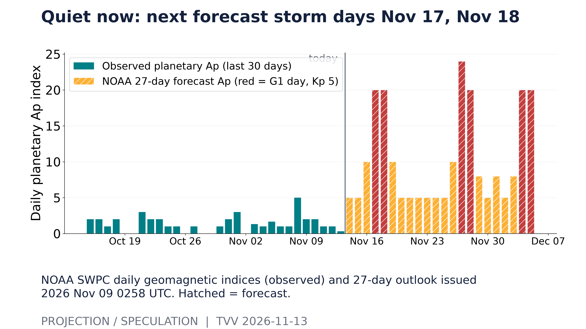
Quiet now: next forecast storm days Nov 17, Nov 18. NOAA SWPC daily geomagnetic indices (observed) and 27-day outlook issued 2026 Nov 09 0258 UTC. Hatched = forecast. [Projection/Speculation; data as of 2026 Nov 09 0258 UTC] Source: services.swpc.noaa.gov data page
5. Critical Infrastructure / Transportation Disruptions
- ★ Global Microsoft outage: Outlook, Teams, Copilot, OneDrive, SharePoint and other Microsoft 365 services failed for users, companies and some government offices worldwide from Thursday, with more than 130,000 user reports. Microsoft says servers failed automated health checks, their traffic overloaded the remaining servers, and there is no sign of a cyberattack. By Friday morning it reported partial recovery after a routing patch, with service still degraded in places; a post-incident report will follow. Microsoft shares were down about 2% premarket. AP · Moneycontrol · Investing.com
- ★ Data-center financing odds: Polymarket puts an Oracle downgrade to junk at 13.9% by Dec 31 and 38.5% by mid-2027, up from 35.5% when the market opened, and gives 92% that Amazon's 2026 capex tops $200 billion after $175.7 billion in the first nine months (see graph). Implication: a junk cut would raise borrowing costs for the AI build-out. Net cash after debt: Oracle about −$88 billion and Amazon −$66 billion, and Meta has turned slightly negative, before leases and off-balance-sheet deals (see second graph). Polymarket · SEC EDGAR
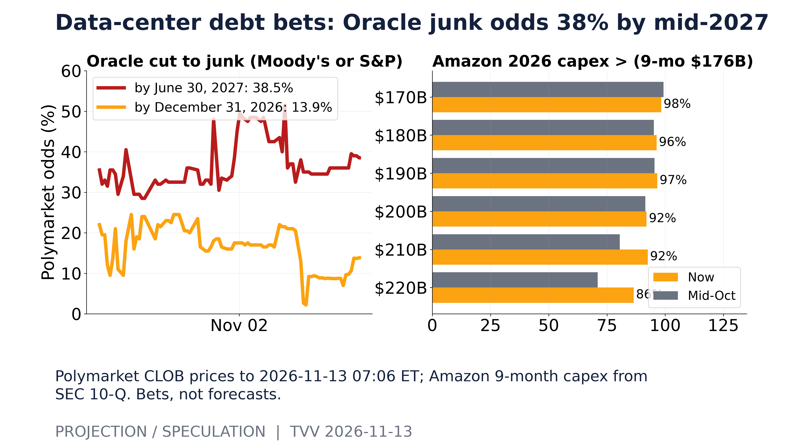
Data-center debt bets: Oracle junk odds 38% by mid-2027. Polymarket CLOB prices to 2026-11-13 07:06 ET; Amazon 9-month capex from SEC 10-Q. Bets, not forecasts. [Projection/Speculation; data as of 2026-11-13 07:06 ET] Source: polymarket.com data page
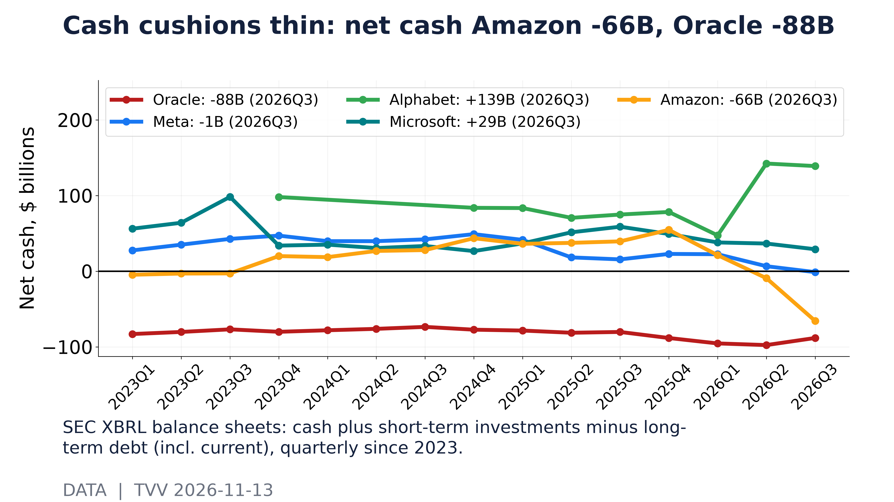
Cash cushions thin: net cash Amazon -66B, Oracle -88B. SEC XBRL balance sheets: cash plus short-term investments minus long-term debt (incl. current), quarterly since 2023. [Data; data as of 2026Q3] Source: data.sec.gov data page
6. Econo-Metrics
- ★ Weak 30-year auction: Treasury sold $25 billion of 30-year bonds at 5.441%, tailing 0.4 basis point, with a 2.36 bid-to-cover and dealers left with 11.4%. The 10-year yield closed at 5.10%. Initial jobless claims rose to 200,000 for the week to Nov 7, while continuing claims fell to 1.697 million. TFTC · Seeking Alpha · Invested Alpha · Newsquawk
- ★ October producer prices (PPI, released 8:30 a.m. Friday): final demand rose 0.3% in October after a revised 1.4% in September, slightly below the 0.4% forecast, but rose 6.5% over 12 months, the largest annual rise since November 2022 and just under the 6.6% consensus. Goods rose 0.5% (10.2% over a year) and services 0.2%; core (less foods, energy and trade) rose 0.5% and 4.9% over a year. Freight trucking rose 3.9% and diesel fell 7.9%. Polymarket's year-over-year buckets had peaked at 6.4% and 6.6%, about 30% each. BLS
- ★ Recession bets fade: Polymarket odds of a US recession by end-2026 fell from 7.5% a month ago to 2.2%, and the real-time Sahm indicator sits at 0.00 against its 0.50 trigger, with unemployment at 4.1% in October (see graph); implication: bettors see no near-term recession signal. Hiring stays slow: the September JOLTS hires rate was 3.4% against a 3.8% 2015–2019 average, with quits at 2.1% and layoffs at 1.0% (see second graph). Polymarket · FRED / BLS JOLTS
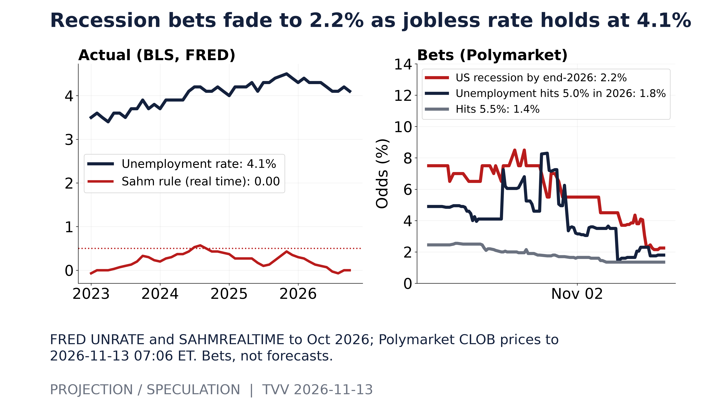
Recession bets fade to 2.2% as jobless rate holds at 4.1%. FRED UNRATE and SAHMREALTIME to Oct 2026; Polymarket CLOB prices to 2026-11-13 07:06 ET. Bets, not forecasts. [Projection/Speculation; data as of 2026-11-13 07:06 ET] Source: polymarket.com data page
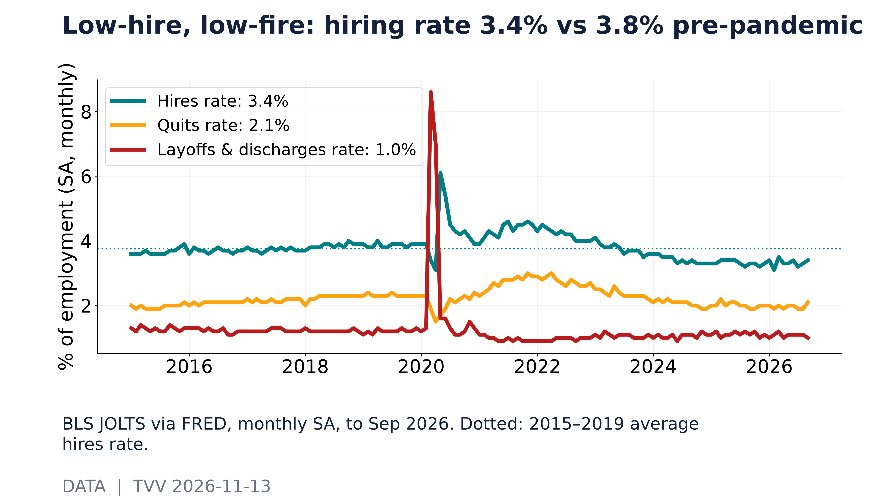
Low-hire, low-fire: hiring rate 3.4% vs 3.8% pre-pandemic. BLS JOLTS via FRED, monthly SA, to Sep 2026. Dotted: 2015–2019 average hires rate. [Data; data as of 2026-09] Source: fred.stlouisfed.org data page
7. Epidemic / Bio-Metrics
- ★ Ebola, DR Congo update: confirmed cases reached 11,114 with 5,433 deaths (data to Nov 10), up from 11,042 and 5,387 in WHO's Wednesday briefing. Africa CDC warns that attacks on health workers are hampering the response, and MSF says millions of dollars meant for the outbreak are going missing. Yahoo / Reuters · Africanews · BBC
- ★ US respiratory snapshot: in the week to Oct 31, flu tests were 9.1% positive, the highest for that week in five years and against 1.1% a year earlier; COVID was 3.5% and RSV 1.8% (see graph). COVID watch: no new WHO, Hong Kong CHP, Taiwan CDC or China CDC report substantiates an SV.2.4 surge in China. CDC NREVSS
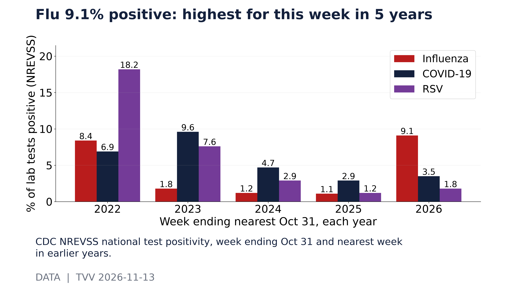
Flu 9.1% positive: highest for this week in 5 years. CDC NREVSS national test positivity, week ending Oct 31 and nearest week in earlier years. [Data; data as of 2026-10-31] Source: data.cdc.gov data page
8. Gold and Silver and Commodities
- ★ Oil jumps, gold slides: Brent settled up $3.06 (3.3%) at $95.82 and WTI up $2.21 (2.6%) at $88.74 after Trump's no-deal post, the Houthi claims against Saudi oil sites and new Hormuz tanker attacks; both were still down about 2.5% for the week. OPEC+ data showed October output rose. Gold settled down 2.9% at $3,885.30, pressured by higher yields and hike expectations; Brent and gold figures come from settlement reports and differ from intraday quotes. Reuters via Euronext · RTTNews · Edge Consultancy
- ★ Odds: Polymarket gives crude a 4.5% chance of a new all-time high by Dec 31, down from 10.5% in mid-October, and 14.5% by Mar 31, 2027; WTI's August–November high was $105.83 on Sep 15 (see graph). Implication: even with Thursday's jump, bettors see a record spike as a tail risk. US commercial crude stocks rose 4.7 million barrels to 414.4 million in the week to Nov 6, still 18.6 million below the five-year average (see second graph). Polymarket · EIA
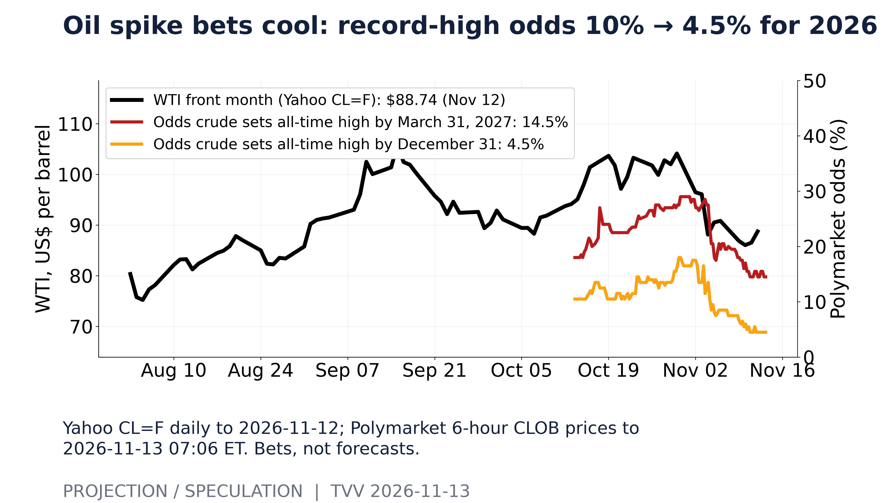
Oil spike bets cool: record-high odds 10% → 4.5% for 2026. Yahoo CL=F daily to 2026-11-12; Polymarket 6-hour CLOB prices to 2026-11-13 07:06 ET. Bets, not forecasts. [Projection/Speculation; data as of 2026-11-13 07:06 ET] Source: polymarket.com data page
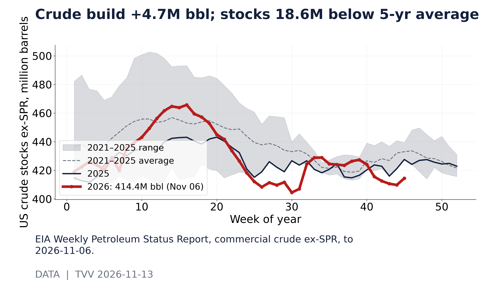
Crude build +4.7M bbl; stocks 18.6M below 5-yr average. EIA Weekly Petroleum Status Report, commercial crude ex-SPR, to 2026-11-06. [Data; data as of 2026-11-06] Source: eia.gov data page
9. Stock Averages and Nasdaq Major Movers
- ★ Thursday: the S&P 500 fell 0.35% to 7,592.40, the Nasdaq 0.39% to 25,366.09 and the Dow 0.36% to 52,297.09, after the S&P erased an early drop of nearly 1%. Nvidia closed down 4.3% after falling almost 12% intraday, with record retail buying at the open; Broadcom and AMD rose about 6%, Nebius fell 16.8% after its outlook, and energy rose 1.5%. Decliners beat advancers 3.4 to 1 on the NYSE. Friday premarket: S&P, Nasdaq 100 and Dow futures were each up about 0.2% ahead of PPI, with Nvidia up about 2.8%. Reuters via Yahoo Finance · Xinhua · Investopedia · Investing.com
- ★ Odds: Polymarket's chance the S&P 500 hits 8,000 in December fell from 57.5% a month ago to 27%, while a fall to 7,200 rose from 25% to 29.5% (see graph). Implication: the downside strike is now priced above the upside one, so bettors lean toward a weak December; the S&P sits 2.9% below its closing high of 7,819. Polymarket
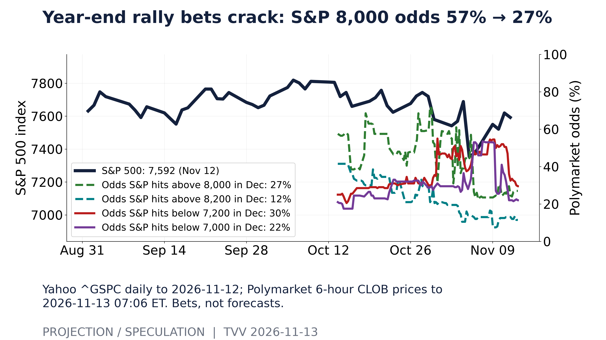
Year-end rally bets crack: S&P 8,000 odds 57% → 27%. Yahoo ^GSPC daily to 2026-11-12; Polymarket 6-hour CLOB prices to 2026-11-13 07:06 ET. Bets, not forecasts. [Projection/Speculation; data as of 2026-11-13 07:06 ET] Source: polymarket.com data page
10. Polymarket and Kalshi Sentiment Highlights
- ★ Crown flips: Polymarket's odds that Nvidia is the world's largest company at year-end fell from 75.5% a month ago to 10.5%, while Apple rose from 20.1% to 85.2%, on about $10.7 million traded (see graph). Implication: bettors expect Apple to keep the top spot after Huang's exit unless Nvidia's Nov 17 results reverse the slide. After hours Thursday, Apple was valued near $5.16 trillion and Nvidia near $4.01 trillion. Polymarket · Yahoo Finance
- ★ Scorecard and Fed: Polymarket's Jensen Huang resignation-or-removal markets have resolved "Yes" after pricing 50% for Nov 13 and 77.5% for Dec 31 on Thursday morning, so bettors leaned right but underpriced the speed. For the December Fed meeting, Polymarket prices a 25-basis-point hike at 88.5%, a 50-point hike at 9.2% and no change at 2.4%, about $8 million traded on the 25-point market. Polymarket · Polymarket
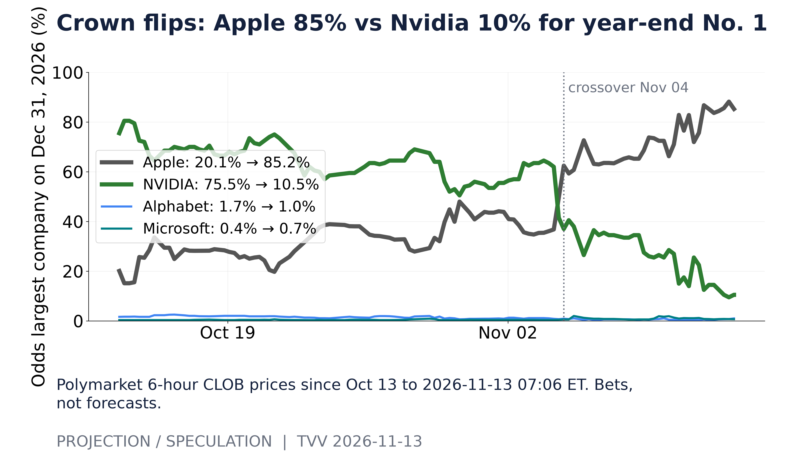
Crown flips: Apple 85% vs Nvidia 10% for year-end No. 1. Polymarket 6-hour CLOB prices since Oct 13 to 2026-11-13 07:06 ET. Bets, not forecasts. [Projection/Speculation; data as of 2026-11-13 07:06 ET] Source: polymarket.com data page
11. Tech-Metrics
- ★ Nvidia: Jensen Huang resigned as CEO, president and director, the company's filing shows; CFO Colette Kress is interim CEO while the board searches inside and outside, and longtime director Harvey Jones becomes Nvidia's first board chair. Huang, who held about 3.61%, has hired law firm Paul Weiss; Kress told staff the company will hold a meeting on Nov 18, and results are still set for Nov 17. Nvidia has no named successor after Huang's 33 years as its only CEO. SEC 8-K · Reuters via Investing.com · Japan Times / Bloomberg
- ★ Earnings beat, mixed reaction: Cisco reported $1.40 a share on $18.5 billion of revenue (up 24%), raised its fiscal-2027 range to $74.8–75.8 billion and now expects $9 billion of AI infrastructure revenue from hyperscalers. Applied Materials posted record revenue of $10.41 billion and $4.16 a share and guided to about $11.1 billion. Conflicting after-hours reports: Cisco up 3% (Investing.com) vs about flat (Benzinga); Applied Materials down 1.6% (Investing.com) vs up 0.9% (Benzinga). Before the reports, drawdowns from 2026 highs were CoreWeave 59%, Oracle 49%, Applied Materials 47% and Nvidia 31%, while Apple sat at its high (see graph). Investing.com · Wall Street Feed · Benzinga · Yahoo Finance
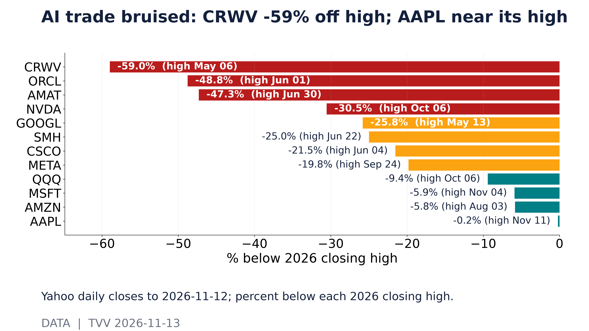
AI trade bruised: CRWV -59% off high; AAPL near its high. Yahoo daily closes to 2026-11-12; percent below each 2026 closing high. [Data; data as of 2026-11-12] Source: query1.finance.yahoo.com data page
12. AI Hypergrowth Risks
- ★ Concentration: Polymarket gives 95.2% that Anthropic's IPO happens by Nov 19 (0.4% by Nov 18), and the most likely first-day market cap is now $1.25–1.5 trillion (39%), down from $2.0–2.25 trillion leading a month ago (see graph). Implication: bettors still expect the listing next week but at a lower value. Fed Governor Michelle Bowman warned that AI-related debt and valuations could trigger a correction if returns disappoint, and Ramp data show the top 1% of companies supply 80% of OpenAI and Anthropic revenue in its sample. Polymarket · The Neuron
- ★ Model race: Polymarket odds that Google has the best AI model at end-2026 rose from 42.5% to 75.5% in a month, while Anthropic fell from 41.5% to 18.5% and OpenAI from 8.3% to 2.6% (see graph). Implication: bettors see one lab pulling ahead, which deepens enterprise lock-in. Google launched Gemini 4 Hydrogen, a fast model for coding and agent work, across Gemini, Search, AI Studio and business tools. Polymarket · Google
- ★ AI successes and adoption: Cerebras lifted its sales forecast and named Microsoft as its third hyperscaler customer, with revenue from the deal from Q1 2027, sending its shares up 18%. United Airlines now bars unauthorized AI agents from completing flight bookings, citing personal data, accidental purchases and aviation rules. CNBC · The Neuron
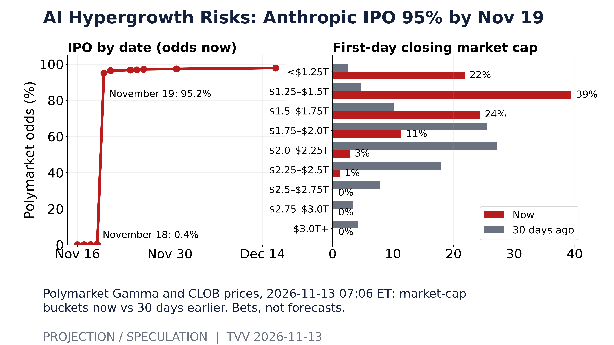
AI Hypergrowth Risks: Anthropic IPO 95% by Nov 19. Polymarket Gamma and CLOB prices, 2026-11-13 07:06 ET; market-cap buckets now vs 30 days earlier. Bets, not forecasts. [Projection/Speculation; data as of 2026-11-13 07:06 ET] Source: polymarket.com data page
Prioritized Risk Summary November 13, 2026
| Sections Ranking | |
|---|---|
| ECONOMY | Producer prices up 6.5% in a year, most since 2022 |
| GEOPOL | Kremlin and US agree to keep Ukraine talks going |
| METALS | Brent jumps 3.3% to $95.82; gold falls 2.9% |
| AI BOOST | Anthropic IPO odds 95% by Nov 19, at lower value |
| INFRA | Global Microsoft 365 outage hits firms and governments |
| TECH | Huang resigns; CFO Kress is Nvidia's interim CEO |
| STOCKS | S&P 500 slips 0.35% as Nvidia falls 4.3% |
| HEALTH | Ebola in DR Congo passes 11,100 cases, 5,433 deaths |
| TERROR | Car bomb kills Russian colonel in St. Petersburg |
| ODDS | Apple now 85% favorite as year-end largest company |
| SPACE | Quiet now; minor storm days forecast Nov 17–18. SpaceX Rocket Nov 13. |
| QUAKES | No damaging M6+ quake; 2026 pace near average |
TECHVESTVENTURES ACTION-ALERT — November 13, 2026 see all graphs click TVV Risk Center
EDITOR — Michael Hentschel
Most news events require or spawn no action or reaction, some (but not many) are or become warnings. We draw attention to substantial lifestyle risks and market risks in particular, some created by Mid-Term Vote anxieties, Middle East tensions, vast over-indebtedness globally, and other events we track. Longer term but capable of causing sudden power surges as serious as the Carrington Event. Climate instability occasioned by long-term cyclical solar electro-magnetic flares, is becoming much more prominent and even more likely. New AI predictive analytics and pattern seekers are pointed in some of these directions, and we monitor imminent likelihood. Some readers might hedge and others might see opportunity. The above is not investment advice.